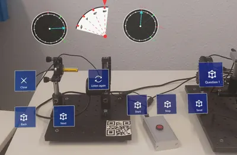
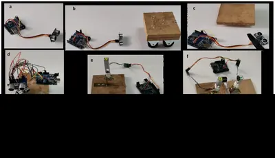

Dr. Atakan Çoban
Learning Experience Designer · Instructional Designer
I’m an education researcher at LMU Munich. I design and evaluate learning experiences that combine technology and practical activities.
Eight projects show what I built and how it could be used in workplace learning.
Get in touch
Projects

01
AI-Based Personalised Learning
Built a voice tutor that listens to answers, gives individual feedback and invites a revised attempt.
Voice coaching and role-play with feedback against job-specific criteria.

02
AR/VR Learning Experiences
Built a HoloLens app that links an interactive 3D detector to a physical LEGO model.
Equipment familiarisation, guided inspections and repeatable task practice.
03
Machine Learning for Performance Insights
Used eye-gaze data with my team to identify how attention differed by task type and inform later learning design.
Find recurring error patterns and test improvements against a performance baseline.
04
AI-Assisted App & Learning Content Development
Used AI tools to develop this portfolio and prototypes for role-play, process simulation and adaptive practice.
Prototype branching scenarios and practice tools for review and learner testing.

05
Hands-On Technical Learning
Designed Arduino activities in which learners collect sensor data and investigate physical systems.
Build training kits and workshops for equipment setup, measurement and troubleshooting.

06
Simulation-Based Learning
Built Algodoo activities that let learners predict outcomes and test them by changing variables.
Practise process decisions and explore equipment behaviour in a simulation.
07
Software Training & Digital Courses
Created a Turkish-language Udemy course with 13 original Algodoo applications.
Design software onboarding with demonstrations, guided tasks and independent practice.
08
Problem-Based Learning Design
Designed quantum physics cases that ask learners to compare explanations and justify conclusions.
Run case workshops where teams use evidence to make and explain a decision.
Contact
Munich, Germany